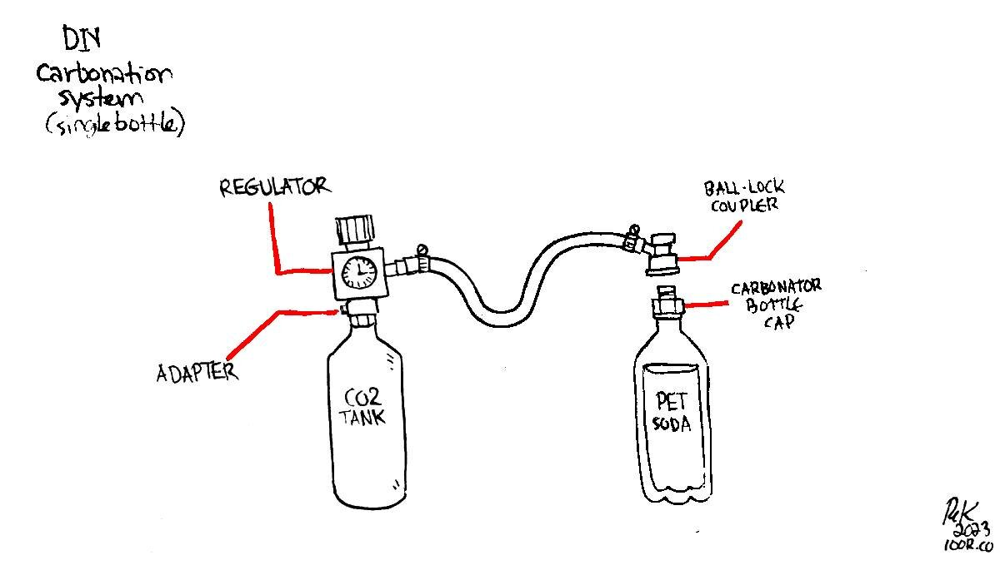

diy carbonation system

2023.03.19
Victoria, BC. Canada.
We do enjoy having some fizzy water now and again. Carbonation elevates aroma and produces an appealing mouthfeel often described as "tingling". Because we lack refrigeration aboard Pino, in the summer carbonated water feels cold even if it isn't.
We decided to make our own system because...
- We can refill our own CO2 bottles.
- It is possible to use a bigger CO2 tank which will cost less, and last longer.
- We can choose a quality SS keg that will outlast any other type of carbonating vessel.
- It uses no electricity (no microchips, like some Soda Stream systems).
- It is possible to choose robust parts which won't degrade, or fail.
- We like having a deeper understanding and control of our systems. Nothing is abstracted, or hidden.
Carbonated water is a fun drink, and a good way to reduce our intake of alcohol. Sometimes we just want something fizzy, and this will give a healthier, and cheaper alternative. We like alcohol, but don't like the idea of ingesting too many empty calories. Evidently there are more basic ways to make fizzy water, ways that rely on fermentation and time with the added benefit of having probiotics (look up water kefir). Building a system like this isn't the most low-tech way to make fizzy water, but since we were given a set with more parts we decided to make good use of it. In any case, it is better than relying on store-bought carbonated drinks, or carbonation systems with proprietary parts.
We experimented with two systems so far. One of them carbonates a single soda bottle, and the other can carbonate an entire keg.
2024 Update:
We spent the summer with this system and we have a couple of notes. Carbonating a keg is a nice idea, but it was not ideal for us for two reasons:
1. We don't like having to use CO2 to "push" the fizzy water out of the keg.
2. Water that isn't cold requires too much CO2 to carbonate, a big issue for us since we don't have refrigeration (it would be fine in the winter, but the goal of this setup was to have something refreshing to drink in the summer). Also, we have to rely on the 'shaking method' to carbonate the water, and we found that shaking a keg isn't as easy.
And so, we are going back to the PET bottle system, but acquired a new SS carbonation screw-on cap with an integrated Cornelius ball lock fitting, which would work with the parts we already have.
The keg system may work for you even if it doesn't work for us.
- end of update -
- Our first system
- Carbonation setup
- Cost
- The problem with using PET bottles
- Why carbonate a larger vessel
- How the system is connected
- How much water can a paintball tank carbonate?
- Force carbonation
- Fast method
- Slow method
- Slow carbonation table
- Temperature
- Head space
- Pressure
- Using the system
- Filling a CO2 tank
- CO2 tank certification
- Bad for your teeth?
- Securing a tank
- Sources
Bottle system

The first setup we built while living in Japan on Pino consisted of a 5KG CO2 steel tank, a regulator, a short length of vynil tubing and a coupler to connect the tube to the mouth of a PET soda bottle. The above setup has a different kind of coupler for the soda bottle, the tube is is attached to the regulator by a pressure nut and onto a plastic couple that is also attached by pressure (no ball-lock mechanism). A carbonator bottle cap that can fit a ball-lock coupler is easier to find, and the system is more versatile because it can also attach to a larger keg (see below setup).
This system is relatively simple to build, but we could only ever carbonate one soda bottle at a time, and relies on the fast method of force carbonation. We made this system in May 2019, drawing inspiration from this tutorial. Being in Japan, we did not have access to the same parts, but the system worked well enough.
This is the custom bottle cap part that we found in Japan, a bit different than a carbonator bottle cap. It screws onto a soda bottle, and a vinyl tube is attached on the other end and leading back to the regulator.
Japan, the land of refrigerated(heated in winter) drink-dispensing vending machines, is not short on PET bottles, so it was easy to find some to re-use. This was a good system, but the tank is rather large and it had to be secured well inside the boat to prevent accidents while sailing. We put it in the closet, and strapped it to the wall. A tank this size lasts a long, long time, but we dreaded having to refill it because of its weight and size (we don't drive).
The problem with using soda PET bottles
We liked the idea of a keg, because this means we don't need to use soda PET bottles.
Soda PET bottles work fine, but eventually they get dented and can rupture (it happened to us twice). Dents are inevitable, because DIY systems designed for carbonating liquids in soda PET bottles involves squeezing the bottle to push water at the top(leaving a headspace is necessary for good carbonation) before connecting the ball-lock coupler. Squeezing a bottle will eventually lead to cracks.
Soda bottles are designed to withstand a lot of pressure, but this also means that the bottle will give if there's a crack. We would inspect our bottles prior to carbonating them, but it is not always easy to see defects. When a bottle explodes PET plastic doesn't shatter, but it'll make a big wet mess all around the space.
Soda Stream bottles last longer than soda PET bottles, but they too eventually yield to pressure and last about 3 years. A stainless steel keg has no expiration date.
When carbonating single bottles, only use bottles designed for that kind of pressure. PET bottles for bottling beer, or for soda is fine, but water or juice bottles are not.
Carbonation setup
In the summer of 2022, while we were anchored in hathayim marine park, a boat came by and gave us a box filled with a beer dispensing kit meant for a common friend. The guy had recognized our boat and knew we could get the beer kit to them. Forward to the fall of 2022, we hand off the kit to our friend, but they give us one of the two paintball C02 tanks so we could use that instead of the large 5KG one we already had. Re-filling a paintball tank would be easier, we think. The large steel tank was given away, and then we tried to find a way to fit the regulator we already had to the paintball tank.
We bought a CGA320 to G1/2-14 adapter(to connect the regulator to our paintball tank), but realized then that no adapter found in the US or Canada would fit our Japanese regulator(which we think, have a JIS B 8246 fitting). We were disheartened that using our existing regulator was maybe not possible(couldn't find any).
We told our friend about our problem, and they confessed that they had no real use for the beer dispensing kit after all (they were looking for a setup that could hold more beer, the two kegs can only hold 3.6L each) and gave us the set. It is funny to think that we carried the kit all summer to give to our friend, only to have it given back a few months later. We told them we would make very good use of it.

Our current setup includes:
- 2x3.6L stainless steel kegs
13.5*29.5cm - Tap Dispenser
screws into keg, with two 12" posts for gas and liquid(with pick-up hose) - 2 ball-lock keg couplers with hose barbs
- A mini CO2 regulator
30 psi max. One dial, 8mm hose barb - 2x20oz(oz refers to CO2 capacity) paintball tanks
- CGA320 to G1/2-14 adapter
permits use of paintball tank to our regulator - Many lengths of vinyl tubing
- A stainless steel tap
Cost
Because we didn't buy these components ourselves, we had to look them up online and found them all listed on AliExpress. This kit(with 1 paintball tank and 1 keg) costs about 170$USD, not including hoses and clamps.
Price break down (in USD):
- 3.6L keg(42$)
- tap dispenser(29$)
- ball-lock keg couplers(3$ per coupler, so 6$ total)
- regulator(40$)
- tap(5$)
- paintball tank(30$ per tank).
Larger CO2 tanks will last longer, but also cost more to buy. A 5KG(10lbs) tank can cost anywhere from 70-100$USD, while an aluminum tank can cost 120$USD and up. An aluminum tank is a good choice if weight is a concern, and it makes more sense on a boat because it won't fall prey to corrosion.
Why carbonate a larger vessel
With this new system we carbonate a whole 3.6L of water instead of a single bottle.
This type of setup is common for people who make beer(think kegerator systems). It uses CO2 pressure to dispense the liquid out of the tap. Fizzy water also uses CO2 as a dispensing mechanism, but it also requires the gas to carbonate (beer is carbonated by fermentation, water isn't).
There are some extra steps to take to carbonate the water properly, but first, we'll explain how the system is connected together.
How the system is connected
The tap dispenser (that screws into the keg) has a pressure release valve, and two little locks (or posts). One is for adding gas, and one is for dispensing liquid. The top lock is typically for liquids and leads to a pick-up hose inside the keg which touches the bottom, and ought to be paired with a ball-lock coupler to a length of vinyl tubing and then onto a tap.
A tap doesn't have to be fancy, just as long as it is either plastic or stainless steel, and that there is a way to open and close the flow of liquid.
The other lock is for the gas, it pairs with another ball-lock keg coupler which is linked by re-enforced vinyl tubing to a regulator, which is screwed into a CGA320 to G1/2-14(regulator to paintball tank) adapter, which in turn, screws into a paintball CO2 tank.
Here are some notes for connecting the system:
- Secure all hose connections with hose clamps that have a smooth interiors to prevent the clamp cutting the hose.
- If re-using a system that once dispensed beer, clean components in soapy water to remove the stickiness. Ball-lock couplers can stay stuck in one position, and may not provide a good seal.
- Use tubing rated for pressurized applications(about a 1/4″ thickness), use a braided vinyl line for a bit more durability.
- Make sure the tap is stainless steel or plastic, don't use copper or brass.
- For threaded connections, use teflon tape to prevent leaks.
Don't let copper/brass fittings come in contact with carbonated liquids. Adding CO2 to water creates diluted carbonic acid(H2CO3). When a tap is opened, the carbonic acid dissociates to water and CO2, which in turn dissolves the copper in brass, which can poison you. The last thing we want is for our beverages to react chemically in any manner with dispensing equipment that could lead to a lot of copper leaching into the beverage.
How much water does paintball tank provide?
A 20oz paintball tank can yield about 85L of sparkling water. Of course, the amount of CO2 use depends on water temperature. Warmer water will require more CO2 to carbonate.
Force carbonation
Force carbonation means injecting CO2 into water for rapid carbonation. There are a several ways to do this, but they all rely on reversing the position of the ball-lock keg couplers on the posts of the keg.
Ball-lock keg couplers are easy to slip on and off, they'll click into place and give a tight seal. As mentionned before:
- One post is for adding CO2
- Another is for dispensing liquid (attached to a long tube running all the way to the bottom of the keg).
On normal installs, the gas enters through the 'gas' post and pushes on the water to force it to flow out of the tap. This is how beer is dispensed in a lot of home keg systems.
For carbonating water, it is necessary to switch the ball-locks so the gas line is using the dispensing post. With the lines switched, the gas enters the keg and flows down into the tube and rises from the bottom and dissolves more readily into the water.
Fast method
When using a PET bottle to make fizzy water, it is necessary to shake the bottle to help dissolve the CO2 into the water for a strong fizz. The 'shaking method' works for kegs too. Agitation (shaking) can significantly increase the rate of carbonation. By shaking it, we're bringing more CO2 into contact with more of the water.
Slow method
This method involves injecting CO2 at high pressure into the keg without having to shake it. Set the regulator to 30-45 psi for a day or two(less time if you use higher pressure).
Important Don’t forget to switch the gas and liquid lines back to their posts, and adjust the CO2 to serving pressure (12-15 psi).
Slow carbonation table
| CO2 pressure(psi) | Low-med(hours) | High(hours) |
| under 15 | see carbonation chart | see carbonation chart |
| 30 | 16 | 48 |
| 35 | 14 | 34 |
| 40 | 12 | 30 |
| 45 | 10 | 26 |
| 50 | 8 | 24 |
Chart information by Brew Cabin.
Temperature
Temperature is important when force carbonating(carbonating by injecting CO2 into the water). The lower the temperature of the water, the more quickly CO2 dissolves, and the lower the volume of gas you’ll need to reach the right volume of carbonation. This is why people sometimes add ice to the water in their kegs.
Water that is 7°C(45°F) can absorb around 3 grams of carbon dioxide, whereas water that is room temperature or 15°C(60°F) can only absorb 2 grams.
CO2 dissolves more readily at lower temperatures, so letting your keg fully chill beforehand, if possible, is a good idea. We don't have a fridge, but in winter the space gets quite cool. Evidently, we won't have chilly water in the summer and will use up more CO2 for carbonation.
Note that when a drink is served it won't stay fizzy as long, because warm water releases CO2 faster.
Headspace
The forced carbonation method is a technique that pumps pressurized CO2 gas into a headspace or liquid inside of a pressurized vessel(keg). Leaving some headspace allows for more 'sloshing', and therefore more contact for the waters with the CO2 when using the shaking method (fast method).
Pressure
The units for measuring the amount of dissolved CO2 are commonly stated as grams of CO2 per liter of beverage (g/L) or as volumes of CO2 per volume of liquid (vol/vol).
1 vol/vol = ~2g/L
vol of CO2/vol of liquid = g of CO2/ L of liquid
Tonic water is typically carbonated to 3-3.5 vol (at a certain temperature). If the goal was to make some tonic-water level of carbonation at home, one would check the temperature of the water, take note of it, then look at this carbonation chart and look toward the right side of the table for numbers ranging between 3-3.5 vol/vol. If our water was at 8°C(46°F), then we'd know to set the pressure at 22-28 psi.
For carbonating at 5 vol/vol, the pressure is set to ~39 psi (with the water at 5°C/41°F). Generally, moderate carbonation is found starting at around 3.00. Strong carbonation is found starting at levels 3.50 and above. Sodastream systems have an internal pressure regulator, and typically carbonate 15 PSI at 2°C(35°F).
As mentioned before, temperature plays a big part in carbonation. The colder the water, the less pressure is required to carbonate it.
Note. Our regulator doesn't permit pressure beyond 30 psi. If you want stonger carbonation, perhaps invest in a regulator that can handle higher pressure, or just make sure the water is cold so you don't need to put the pressure as high.
Using the system
In a keg system like ours, there are 2 points of gas control:
- 1. The regulator's on/off knob
- 2. The gas post on the tap dispenser
With the couplers, gas will only flow through the system if the ball-lock keg couplers are snapped in.
Step 1. Fill the keg with water, leaving some headspace inside the keg to make carbonating easier.
Step 2 When the keg is full of water, screw in the tap dispenser, connect the gas line to the dispensing post. Don't connect the line to the tap just yet. Bring the system to pressure by turning the knob on the regulator from off to on. Turn the PSI up to almost 30 (more, or less, depends on water temperature).
Step 3. Choose method of choice.
If using fast method, shake the keg to dissolve the CO2 into the water. Keeping the gas on, shake the bottle for 20-30 seconds to dissolve the CO2 into the liquid. Stop, listen, then continue to shake (total of 5 minutes). You’ll see the regulator gauge fluctuate a bit as gas is dissolved—the system will keep the pressure constant, so as more gas is dissolved, more is passed into the bottle. Close the gas line at the regulator.
If using slow method, set regulator to 30 PSI and leave to sit for a day.
Step 5. Remove the gas line from the dispensing post of the keg, and place it on the gas post. Connect the liquid line to the dispensing post of the keg(this is the line that leads to a tap). Turn the gas on to a serving pressure of 12-15 PSI. Then turn the tap and watch as fizzy water comes flowing out.
Re-filling tanks
Places that service fire extinguishers or fire and safety equipment, local welding supply, or homebrew supply store are typically willing to fill CO2 cylinders. Here in Victoria we visited Crest Fire Extinguishers, and it cost us 10$ per 20oz tank. They told us the CO2 was food safe.
CO2 tank certification
CO2 tanks have to be re-certified every 5 years (they're marked with a date). If the certification is expired no one will want to refill the tank. CO2 tanks need to be Hydro Tested every 5 years to ensure the integrity of the cylinder. Hydro Testing cylinders will confirm the expansion of the CO2 tank is within safe limits to continue use. If it doesn't past the test, it may be necessary to change the valve.
Tank from another country. Note that if the tank was certified in another country, they may not want to fill it even if it isn't past its certification date. Different countries have different standards.
Paintball tank certification isn't as important because of the size of the tank. The certification for our tank is marked for 2020 but the person who re-filled it told us it doesn't matter for tanks of that size (we hope that's true).
Bad for the teeth?
The acidity in carbonated water can damage the enamel of your teeth, especially when lime is added. Like with anything, watch your consumption. We treat fizzy water as a treat, for times when we may crave alcohol but wish to reduce our intake.
Don't rely on carbonated water to quench your thirst, drinking still water will always be preferable.
Securing the tanks and keg
On a boat, keeping things secured is crucial, especially high-pressure items. We visited a local fire and safety equipment store, and asked if they sold brackets that could fit our keg. They sold us a heavy-duty bracket typically installed in moving vehicles. The item wasn't on their sell list, but he gave us a very fair price for it. We looked at the price of the bracket online afterward, it is typically sold for 90$CAD, we got it for 50$CAD.

The paintball tanks are lighter, and easier to secure than the keg. We got some stainless steel loop hose clamps, and drilled a hole in the center of each clap so we could bolt it to the wall. We drilled holes to afix the clamps to the wall so we would never have to remove them, so that in turn we can secure the tank by slipping it into the clamp loops and tightening them with a bolt and nut. The rubber lining will ensure that it doesn't accidently slip out (should we experience another wave event, see north pacific ocean for details).
We installed two loop clamps per bottle. A single clamp will turn on its bolt, but two will keep it in place.
We installed the keg and tank in the space where our fridge used to be. We use that space to store lacto-fermented veggies in jars, as well as large containers of oils, or condiments like soy sauce. The end of the fridge narrows to a point and isn't great storage, but it is a good place for our keg and CO2 tank. Now, both are secured to the wall.
The space has a drain for water, so that if there is ever an accident the water will slip into the bilge instead of filling the space.

Sources
- A Guide to Carbonating Beverages at Small Scale, by Xuwei Song, Nicholas Wendrick, Charles A. Sims, and Andrew MacIntosh.
- The Definitive Guide to Force Carbonating Your Beer by Brew Cabin.
- Carbonation table